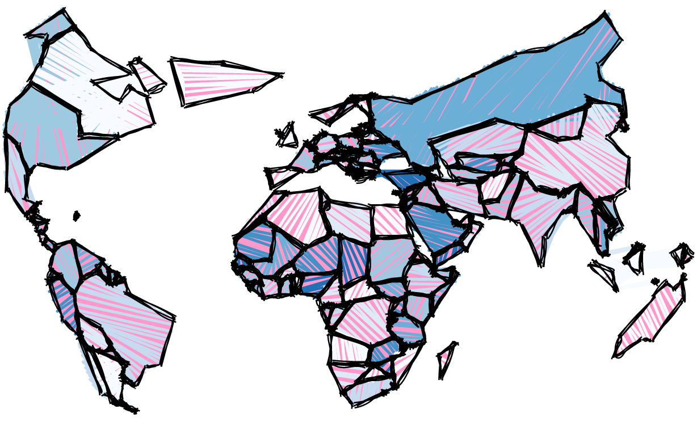
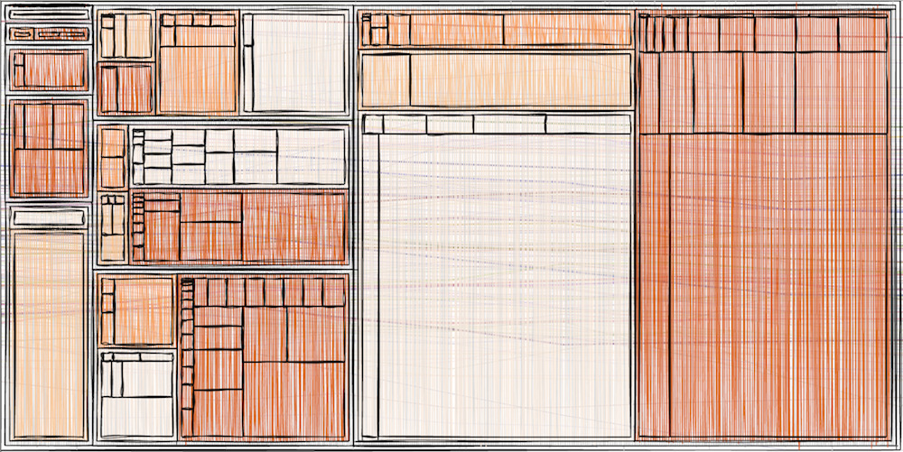
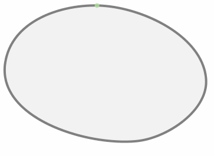
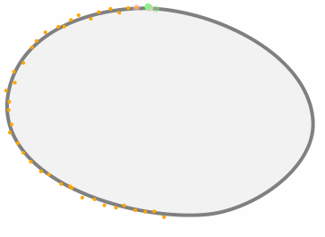
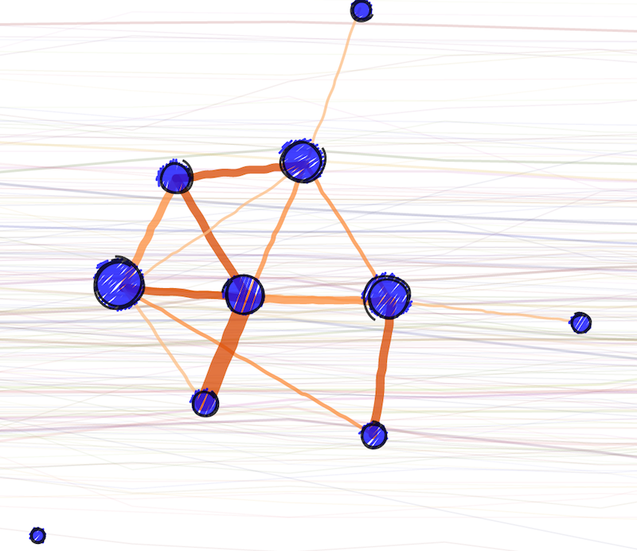
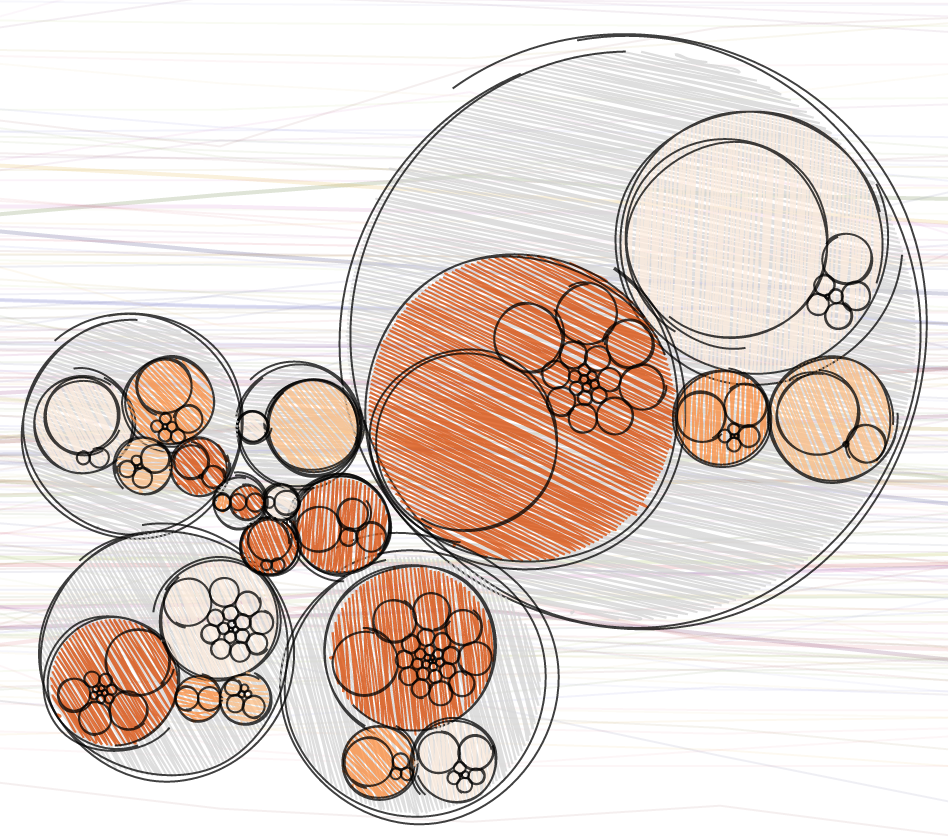
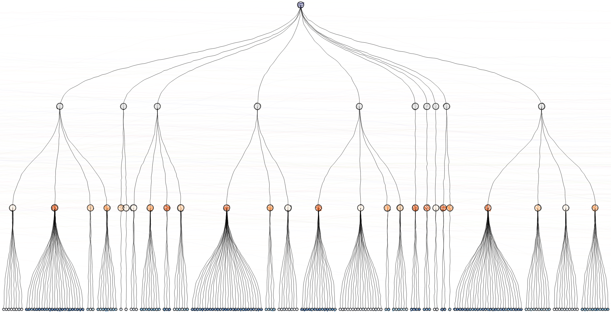
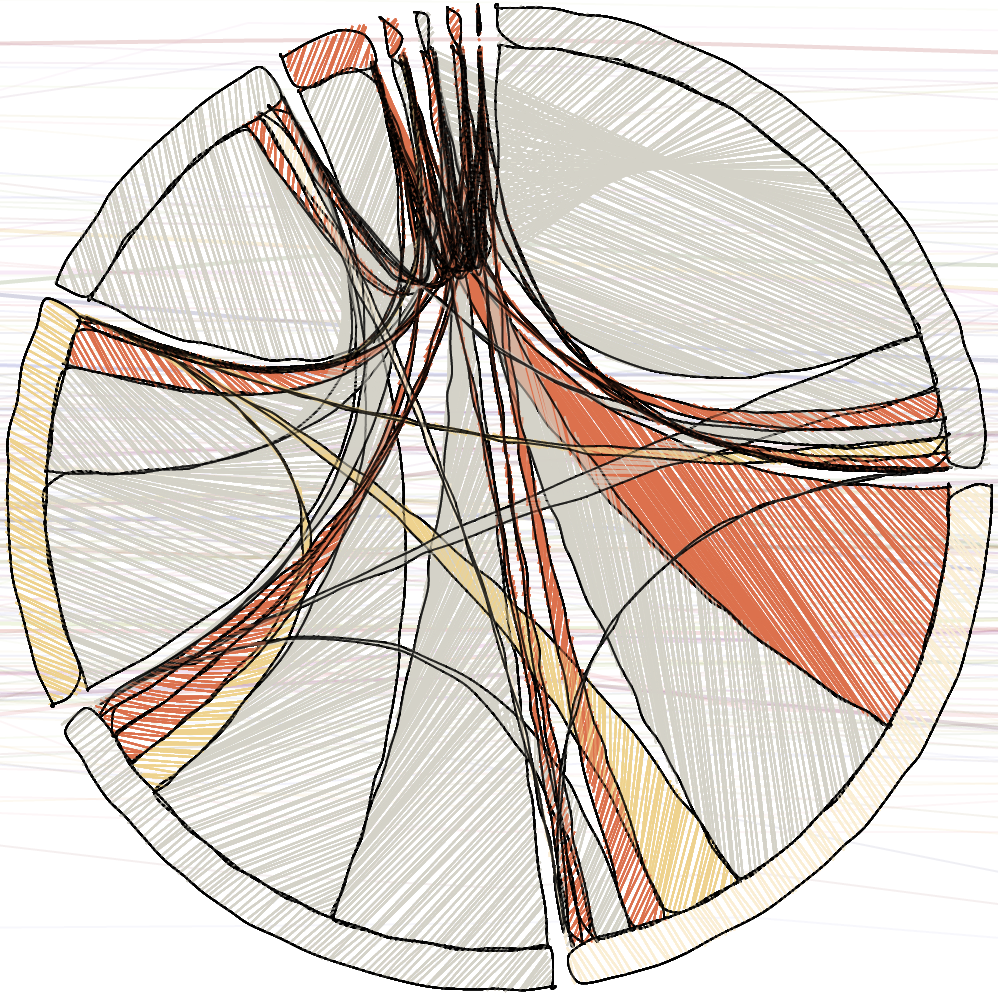

From the original site / 2015-08-15
This archived piece preserves its original text and historical context.
The virtues of a sketchy life
If you follow me on Twitter, you know that for the last week I've been obsessed with sketchy drawing in D3. I've also been experimenting with some Lovecraftian data visualization, but that's a topic for another time.
Sketchy, non-photorealistic rendering (as the academic literature refers to it) has always been something that interested me. I actually wrote a small sketchy library called d3.sketchy that drew parameterized circles and rectangles that were meant to look like they were the product of an inky pen or marker.
But those past forays into sketchy rendering were nothing compared to what happened when I found Sebastian Meier's sketchy rendering library (also called d3.sketchy). Along with sketchy outlines of circles and rectangles, it provides functionality for filling shapes with sketchy lines. I couldn't help myself.

Because this is parameterized and slightly randomized, that map will look a little different each time you view it, and you can animate the various sketchy lines to good effect. Take a look at the example on blocks that shows off that animation.
Sebastian Meier's d3.sketchy library does a great job with outlines, but I found its fill functionality wasn't really ready for prime time. Moving shapes around the screen or having multiple clipping areas seemed to result in strangeness, and the angle of the fill (90° & 180° angles seemed to work better than others) also resulted in bugginess. The library is barely two weeks old, though, and I'm sure he'll sort it out.

To make up for the uneven fill performance, I wrote a "cheap" sketchy function that I leaned on with most of the examples I produced. What's a cheap sketchy function? Well, with my old d3.sketchy or with Sebastian's new hotness, the sketchy shapes are pretty complicated. A cheap sketchy function is by comparison pretty spartan:
function cheapSketchy(path) {
var length = path.getTotalLength();
var drawCode = "";
var x = 0;
var step = 2;
while (x < length / 2) {
var start = path.getPointAtLength(x);
var end = path.getPointAtLength(length - x);
drawCode += " M" + (start.x + (Math.random() * step - step/2)) + " " + (start.y + (Math.random() * step - step/2)) + "L" + (end.x + (Math.random() * step - step/2)) + " " + (end.y + (Math.random() * step - step/2));
x += step + (Math.random() * step);
}
return drawCode;
}

It's a simple function that takes advantage of the native SVG functions that give you the length of a path and the XY coordinates of the path at particular lengths. It draws a line starting at steps along the path and ending at a a co-equal step from the end of the line, with a little randomness thrown in to make it look sketchy. This won't work with SVG:rect or SVG:circle elements, but you can easily replace these with rectangular or circular paths.

Drawing like this is remarkably fast, and shapes can be sketchily filled with cheapSketchy() while animating a force-directed network. It should still be optimized, so that it uses canvas rendering or doesn't redraw during every tick event. It has the effect I was going for, which was to evoke early animation where each cell was slightly different.

But why draw sketchy data visualization at all? Obviously the pieces above and others that I've done earlier, have an interesting aesthetic. If it becomes popular, then the novelty of sketchy rendering will wear off, but there's an unmistakeable attractiveness to it. Data visualization practitioners tend to dismiss aesthetic reasoning, preferring something more statistically significant. But aesthetics grow in importance when a work is judged by engagement. If you create data visualization and you know that people are going to use it, regardless of how ugly it is, like most people building internal tools and dashboards in industry, then you have a skewed view of the importance of aesthetics. Most data visualization has to carry water not only for portraying trends in data but also for encouraging the reader to actually pay attention. In that regard, sketchy rendering is extremely practical.

In situations where the aesthetic value of a sketchy data visualization is unimportant, there's still a place for sketchy rendering. I started creating these sketchy data visualization products for a very real purpose: a talk on complex data visualization with D3.js in front of the massive SFHTML5 Meetup Group. I wanted to show the various complex data visualization layouts available in D3 but I wanted the audience to focus not on the data being represented but on the layouts themselves. In that way, the disruption that sketchy rendering provides, especially when the sketchiness is increased to the point of loose rendering, is exactly what I want.

There's a third, and finally more scientific, reason for using sketchy rendering. As described in Sketchy Rendering for Information Visualization there are tangible expectations that one can have about how sketchy rendering is read. It also shows that rectangles suffer less from sketchy fills and strokes than circles in regard to the evaluation of size, so using sketchy effects for aesthetic purposes in data visualization products made up of rectangles can be considered a safe bet. And while the paper also supports my previous two points, it also provides exciting results of a study indicating that readers can provide an accurate though imprecise degree of sketchiness that correlates with sketchy settings. That means you could tie sketchiness to uncertainty or significance values, and render the mean value of a distribution with uneven variability in a different way than you might one with a standard distribution.
Should you use sketchy rendering in your data visualization products? Yes, if only in the initial phases, and especially when garnering feedback. If you present your initial prototype data visualization for review and it uses non-photorealistic rendering, you'll probably have a better chance of receiving feedback, though you should gird yourself for some eye-rolling and exasperated groans from the more scientistic in your audience (but once you provide them with a few citations, they should warm up to the idea, or at least pretend to). If you're in a field where you need to curry engagement, then by all means make your fills and strokes a little more sketchy. A/B test it, and see if you can move the numbers with a sketchy viz better than a more staid "photorealistic" one. And, finally, if you're dealing with uncertainty or other fuzzy variables, then maybe sketchiness could help. Given the underdeveloped nature of that area of data visualization, it couldn't hurt.

Finally, these libraries exist, and they're useful, but you don't need to rely on them. Perturbing a line or filling a shape with strokes or randomizing a color or two isn't the most difficult skill to master, and it's a great way to better understand graphical rendering. So get out there, make sketchy data viz, write a third or fourth or fifth d3.sketchy library, and push the boundaries a bit.